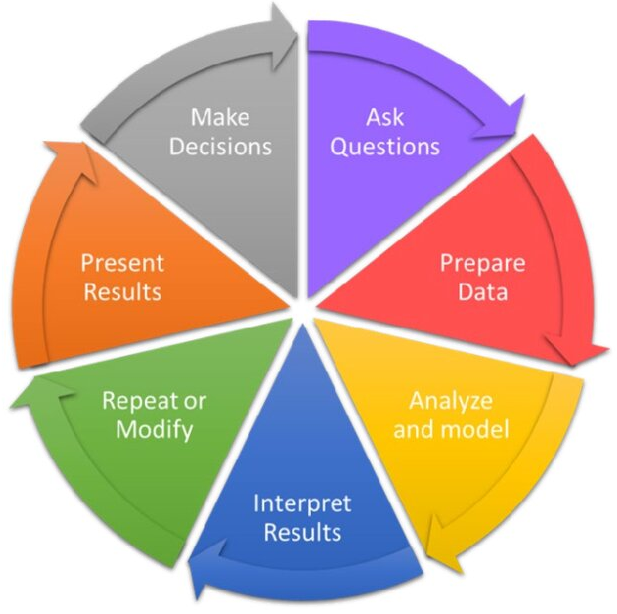
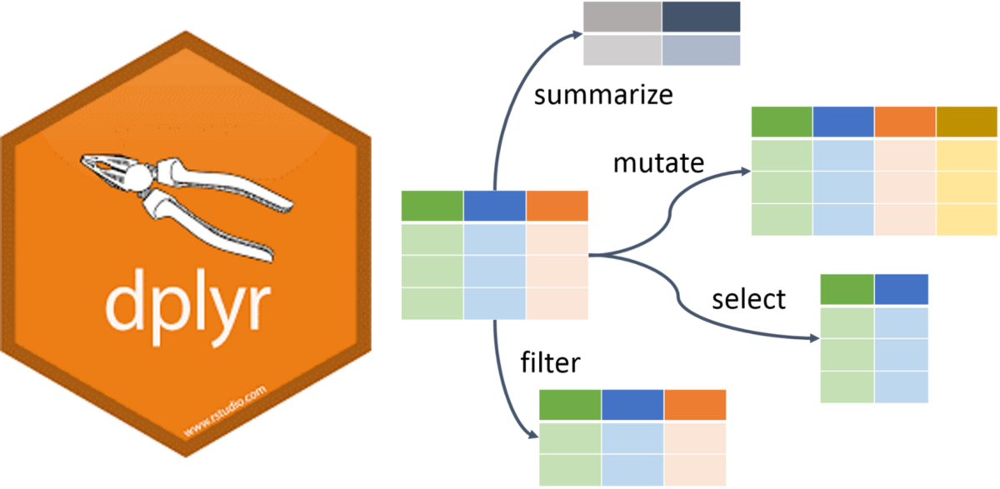
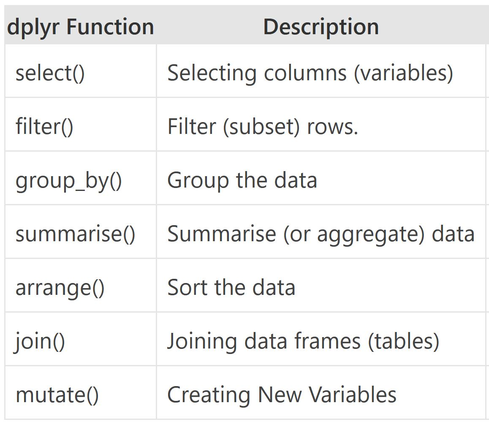
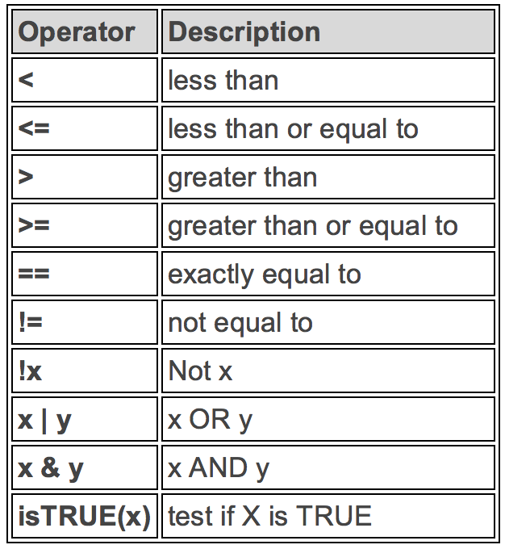
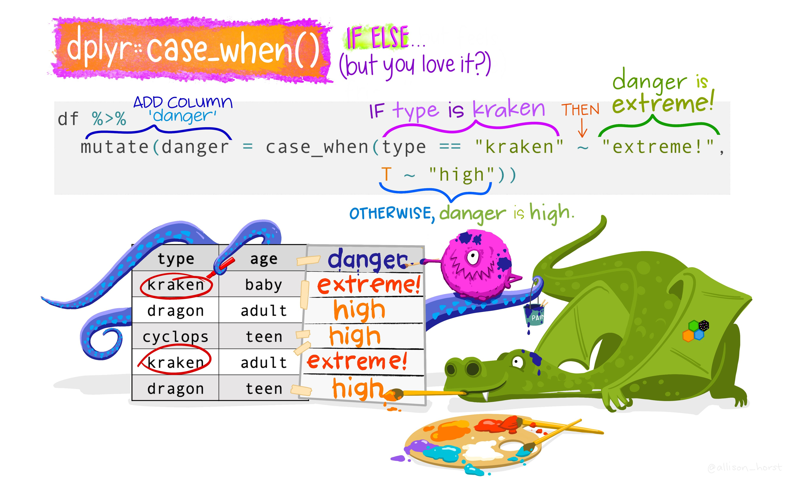
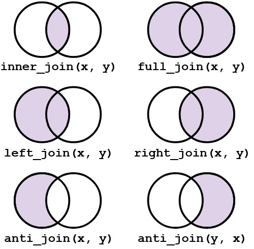
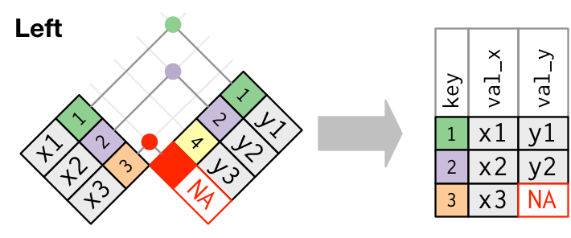

Working with Data in R
DMgtAsia · Session-III
What is Exploratory Data Analysis?
EDA is the critical first step.
EDA is a state of mind.
EDA is exploring your ideas.
EDA has no strict rules.
EDA helps understand your data.
EDA is an iterative cycle.
EDA is a creative process.
Definition of EDA
“detective work – numerical detective work – or counting detective work – or graphical detective work”
- Tukey, 1977 Page 1, Exploratory Data Analysis
How to do EDA?
The easiest way to do EDA is to use questions as tools to guide your investigation.
EDA is an important part of any data analysis, even if the questions are known already.
Asking the right questions
Key to asking quality questions is to generate a large quantity of questions.
It is difficult to ask revealing questions at the start of the analysis.
But, each new question will expose a new aspect and increase your chance of making a discovery.
What Questions to ask?
What type of variation occurs within your variables?
What type of covariation occurs between your variables?
Whether your data meets your expectations or not.
Whether the quality of your data is robust or not.
Steps of a data analysis project
- Preparing Tidy Data
- Data Cleaning
- Data Wrangling
- Data Exploration
- Transformation
- Visualization
- Statistical Analysis
- Prepare Results
- Draw Inferences
- Report Findings

Data Wrangling in R
dplyr Package
The dplyr is a powerful R-package to manipulate, clean and summarize unstructured data.
In short, it makes data exploration and data manipulation easy and fast in R.

Verbs of the dplyr
- There are many verbs in
dplyrthat are useful.

Using the pipe operator (|> or %>%)

Let us load some data
The cells on this page run live in your browser. This first one loads the WHO TB data and runs on its own (the first run takes a few seconds while dplyr loads).
Take a Quick Look at the data
glimpse() shows every column down the page. Press Run.
Check the first few rows
Check the dimensions and the column names
Unique countries in the bottom 50 rows
With the pipe, the steps read left to right: take tb, keep the last 50 rows, list the distinct countries.
distinct() and count()
distinct() returns the distinct values of a column. count() returns each distinct value and how many times it appears. Try both.
arrange()
arrange() sorts by a column. Use desc() (or a leading -) to sort descending. Edit and re-run.
Logical Operators in R
To satisfy all of several conditions, use the “and” operator,
&.The “or” operator
|returns rows that meet any of the conditions.

filter(): rows from 2015 on
filter(): all entries for India
Filter by year and country
The %in% operator
To filter a categorical variable for several levels at once, use %in%. indian_subcont was defined in the first cell.
summarize()
summarize() collapses many values to one. n() counts rows; n_distinct() counts distinct values.
group_by() and summarize()
The power of summarize() shows when you group first. Summaries are then computed per group.
mutate() and if_else()
mutate() creates or changes a column. Here we flag the Indian subcontinent.
Group by the new variable
case_when()
Alternative to if_else() for more than two options.

if_else() vs case_when()
Use if_else() for two options. For more options, nested if_else() becomes hard to read, so case_when() is clearer.
join()
Real projects combine several sources of data.
The mutating joins combine data frames by matching rows on a key.

More on join()
left_join(x, y)keeps all rows ofx, adding matching columns fromy.right_join(x, y)keeps all rows ofy.full_join(x, y)keeps all rows from both.inner_join(x, y)keeps only rows present in both.
Visual representation of the left_join()

pivot()
We often reshape data between long and wide format with the pivot family of functions.

Other Useful Functions
drop_na()removes rows with missing values in a chosen column.select()returns only the columns you name (the column counterpart offilter()).
More Resources for dplyr
The Data Transformation cheatsheet summarises the
dplyrverbs on a single page.The RStudio IDE cheatsheet is a handy reference for the editor itself.
Review the Tibbles and Transformations chapters of the free R for Data Science book.
Questions?
Thank You!
DMgtAsia · Introduction to R & RStudio